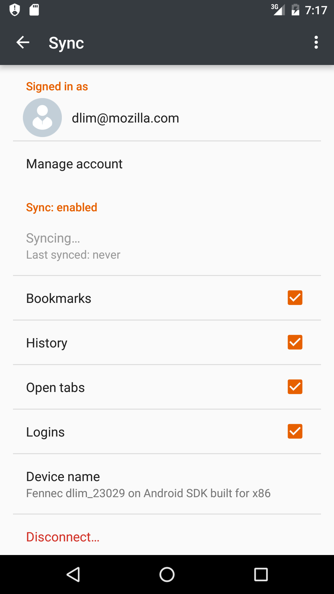

Daniel Lim
FAS(T) summer
Summer 2016 Intern Presentation
Background
- Which team?
Originally Firefox for Android intern, now part of Activity Stream Mobile Guild
- Where are you based?
YVR Vancouver Office
- Which school, what major?
Computer Science Undergraduate at University of British Columbia, Vancouver, Canada
Work
- Fennec [1] UI bug tickets
- Activity Stream Web Extension Prototype
- Sync work on Android (WIP)
Fennec [1]. Project name for Firefox for Android
Why
- It's a bug
- Inconsistencies between tablet and phone
- Add new capabilities
How
- Keyword searches in DXR and IDE
- Breakpoint and Debug
- Code, build, run, review, repeat
Activity Stream Web Extension Prototype
Why
- Prototyping as part of new context-graph initiative
- Exploration to run Activity Stream on different platforms
- Possibility of leveraging data outside of Firefox
How
- UI reused -- It's a webpage!
- Web Extension API
- page-metadata-parser
Sync work on Android (WIP)

Lessons
- It's not just all about coding
- Ask, ask, and ask again
- It's not always as easy as it seems
- There are always tradeoffs
- Change is still the only constant
Special Shoutout
- Grisha Kruglov (mentor)
- Stefan Arentz (manager)
- Mobile team
- Fellow 2016 Interns and University Team
- YVR office
- Margaret Leibovic and Nicholas Alexander
Questions
- email: dlim@mozilla.com
- irc: dlim